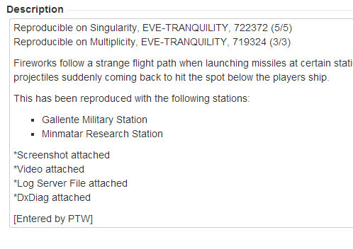

JIRA
JIRA is an issue tracking system developed by Atlassian. It is a popular tool in software development and is used by CCP across all of their projects. Player submitted Bug Reports are also
tracked through JIRA.
At first, JIRA can come across as slightly daunting, but the more you use it, the more familiar you'll become with it and the more you'll realise just how powerful a tool it can be when looking for previously reported issues.
To start you off on your way to JIRA mastery, our kind clients at CCP have organised access for us to
Atlassian University. You'll go through these lessons as part of
your training and you can always refer back to the courses whenever you need a refresher.
Atlassian also has comprehensive documentation on how to use JIRA - a link can always be found on the test homepage or you can check it out
here.
Submitting a Defect
When entering a defect to CCP, first click on
New Defect on the EVE test launch page. A new window will then open on the
Create Issue page of JIRA. If already on JIRA, simply select
Create Issue from the toolbar at the top.This will
open the Create Issue form in a popup on screen.

On the submit defect page you will copy and paste all the details from your
Defect Report. Once you have
filled in all the relevant sections, click
Create.
It is important to note here that in general, the
project should always be EVE and the issue type should always be
Defect. There may be times where this is different but you will be informed if this is the case. If the project does
change, then the entry window may look different depending on what information the client requires in the defect report.
It is also important to note that computer information is entered on the
More Tab of the "Create Issue" window.
On this second tab you also have the option to set the security level to Non Public this
setting should be used whenever you are entering an exploit in the game that should be kept private.

When you are creating your issue you'll want to attach your
DxDiag and Logsever File along with any Screenshots or Videos.
To do this, click
Choose Files next to the Attachments section and then open the relevant files. If you select the wrong
file at this stage, you can remove files too.

Defect Levels
We're here to find defects.
-
A:
The defect causes a failure of the complete software system, or a program within the system. (e.g. crashes, whole system failure)
-
B:
The defect causes a failure of a subsystem, or causes the system to produce incorrect, incomplete, or inconsistent results or impairs the system functionality. (e.g. nonfunctional UI element, incorrect dogma attribute, performance impact)
-
C:
The defect does not cause a failure, and does not interfere in the fluent work of the system and programs; Text issues in instructions, locations or anything that effects the players path or the game func will also be a C. (e.g. Instructional text error, bad container placement in dungeon)
-
D:
The defect is aesthetic, is an enhancement or is a result of non-conformance to a standard. Text issues about readability, punctuation, flavour text or anything else that is purely aesthetic. (e.g. Missing space, Inconsistent Capitalisation)
Defect Categories
When creating your defect, you will place it under a specific category using the template below:
- Gameplay
Gameplay mechanics: Anything to do with the logic behind the game design and the way features are intended to work.
Examples: Ship and module attributes, Scanner, Science and Industry
- PvE
Player versus Environment issues relating to the content of the game.
Examples: Agents/NPCs, Missions, Incursions, LP Store
- UI
User Interface mechanics: Issues relating to the functionality of the UI (Drag & drop, sort order, alignment, compact mode, UI scaling, window behaviour).
Examples: Neocom, Overview, Station services, Brackets
- Graphics
Issues relating to all visual aspects of the game except UI (Textures, Lighting, Effects, Model geometry).
Examples: Station hangars, CQ, Character Creator, Ship Visuals
- Technical
Issues relating to the game client not functioning.
Examples: EVE Voice, Client cache, Exceptions, Crashes
- Localization
Incorrect or missing translation to any of the three supported languages but not spelling mistakes in English.
Examples: Translation errors, missing translations
- Audio
Issues relating to updating and validating the EVE game client.
Examples: Environment music, sound effects, UI context audio feedback
- Launcher
Issues relating to updating and validating the EVE game client.
Examples: EVE client fails to update, launch, is corrupted, etc.
- Forum/Website
All issues relating to the forums or any EVE website.
Examples: EVE-Gate, API
Assigning Defects
You will have the option to assign it. This enables CCP to deal with issues
in a more timely fashion. The different assignments are as follows:
- Game Design - For all issues regarding the design of the game – ship/module attributes, texts, anything with agents, dungeons, missions, epic arcs, or the tutorial.
- All module, item, ship and mission descriptions
- All module, item, ship and structure statistics (attributes)
- Mission functionality
- Gameplay balancing
- Dungeon functionality (all dungeons)
- Dungeon aesthetics and layout (all dungeons)
- Dungeon distribution
- Reward balancing (mission and NPC loot)
- Market contents
- Tutorial functionality
- All text
- Software - For all issues related to code and programming (the UI is part of the code).
- Graphics & Audio - For all issues regarding the models, textures, animations, graphical effects and sound of the art assets e.g. Shaders, Collisions, Miniballs, Sound.
- Localization - Defects in the Localization category - not English.
- QA - For issues reported by bug hunters that need further reproduction or more info. Generally, we never use this bucket.
Always ensure that you assign your defect to one of these assignees. As you can see, they are pretty self-explanatory but if you have any queries, or if your issue falls into a grey area - just ask
the team and we'll figure something out.
Labels
A useful organisational tool in JIRA is the labels feature. At the moment, we only require you to add the label
PTW to
your defect report. Remember to add it to all defects and ensure that it is in all caps.
Don't forget - all labels are case-sensitive.
Searching for Defects
Searching for defects is a vital skill, it's one that enables us to discover wheter defects are already reported - so that we don't waste time
covering old ground. Luckily we have multiple tools at our disposal to find defects in JIRA.
Your first port of call should be our launch page, the search box on the launch page is the very same "Quick Search" you find
in JIRA. From here you can search for text in a defect report - or you can enter a defect ID to go straight to a report.

After performing a quick search your browser will detail your search results. You will see that the results page has
translated your original search into a SQL query - and you'll now have access to the
Advanced Search.
See quick search as a
"launching point" for finding defects. once you're on the advanced search page you can expand the SQL query to narrow down
the results.
SQL Queries
Jira is an immensely powerful tool when it comes to search. To explain all that is possible to do with SQL queries would take a
great deal of time and compehensive documentaion. Thankfully, that documentation exists and can be found
on the Atlassian website.
In general though, if you have a basic understanding of queries in programs such as Excel, you'll be able to wrap your
head around SQL Queries. In the example below you'll see a query that was constructed to find all of our previous EVE functionality
defects - entered before we transferred to JIRA.
(description ~ PTW OR description ~ e4e) AND summary !~ JA
Here the query is initially looking for any defects where the
description contains the phrases - PTW and e4e
[(description ~ PTW OR description ~ e4e)]. If we were
to run the query just based on these parameters, we would get over 4,000 results because it will also return to us defects that we
entered for Japanese localisation. As such, we then add the AND condition that searches the
summary and excludes any
results that contain JA -
[AND summary !~ JA].
As you can see, the queries are able to search various fields and depending on the
operators and
keywords you use, you can narrow down your searching parameters.
The operators and keywords used in the example are:
- CONTAINS: ~
- DOES NOT CONTAN: !~
- AND
- OR
That squiggly line is a very useful operator for general searches and is called the
Tilde - just incase you were wondering.
Other operators include =, >, < and IS. Keywords include AND, OR, NOT.
This is just a brief insight into SQL queries, as previously mentioned, the
Atlassian website
contains a wealth of information relating to SQL queries so you'll be finding defect reports like a pro in no time.

Useful Filters
Below you will find a list of filters that should should save in JIRA for quick reference. The first two are the most useful when trying to find out whether or not a defect
you have found has already been reported - first by checking if it is open, and secondly by checking if it is "by-design" or possibly recently resolved and closed.
- Default Search - Open Defects
project = eve AND type = defect AND status != closed AND text ~ "Enter Text Here" ORDER BY created
This default search will ensure that you are always looking for open issues in the EVE project, it is a great starting point for searching the database for known and
current issues.
- Default Search - All Issues
project = eve AND type = defect AND text ~ "Enter Text Here" ORDER BY created
This filter is similar to the one above but will show you all issues. This is especially useful when searching for defects that have been recently closed or marked as "By Design" in the past.
- Defects Assigned to Me [You]
assignee = currentUser() AND status != Closed
In general, you won't have defects assigned to you. But in the rare cases that a defect gets reassigned to you by a dev (for whatever reason) or when you're looking at
bug reports and have assigned one to yourself for investigation purposes - you can easily find them here.
- Defects Entered in the Last 24hrs
created >= -1d AND type = Defect AND project = EVE
Does exactly what it says on the tin. This is a great quick referance tool to see what areas are causing issues, and also for when you're about to put in a new defect -
just incase someone over at CCP has put in the defect you were about to.
- Bug Reports Open
project = EBR AND resolution = Unresolved AND status = Open AND (labels not in (Launcher, SupportTicket, "Forum/Website") OR labels is EMPTY)
These are all the bug reports...that are open and need some care. Minus ones that have already been marked as Launcher, SupportTicket or Forum/Website - these will generally
be worked on by CCP.
- Bug Reports Open Last 24hrs
created >= -1d AND project = EBR AND status = open AND (labels not in (Launcher, SupportTicket, "Forum/Website") OR labels is EMPTY) ORDER BY created
These are the bug reports entered over the past 24hrs - with the same label filtering system as above.
- All PTW Functionality Defects
(description ~ PTW OR description ~ e4e OR labels = PTW) AND summary !~ JA AND project = EVE ORDER BY created DESC
All of the defects across the whole of time. Excluding any Japanese defects from our localization times.
- All PTW Unresolved Defects
(description ~ PTW OR description ~ e4e OR description ~ E4E) AND summary !~ JA AND resolution = Unresolved AND project = EVE ORDER BY created DESC
All of our defects that are currently open.
- Defects Reported by Me
reporter = ptw_[Name] OR reporter = e4e_[Name] AND project = EVE ORDER BY updatedDate
Your own personal list of EVE defects. You may, over time, enter defects into different projects so you may want to adjust this filter accordingly when such a situation
arises.
Keyboard Shortcuts
JIRA has a myriad of keyboard shortcuts in order to help you navigate through issues without having to use a mouse.

Jira Formatting
Bullet Points
You can easily make a
bullet point list in Jira, by using a dash [
- ]. Jira will then automatically convert this into a bullet point.
For Example:
This has been reproduced with the following stations:
- Gallente Military Station
- Minmatar Research Station
You can also create bullet points using the asterix [
* ] - with double asterix' used to indent [
** ] bullet points.

Formatting Exception Boxes
You can and should format exception that go into Jira into a scrollbox for ease of reading as many exception can be extremely lengthy. To do this simple use the following formatting to create the box below:
{code:title=
Enter a title here:}
Enter your exception here
{code}